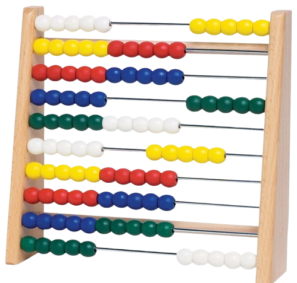
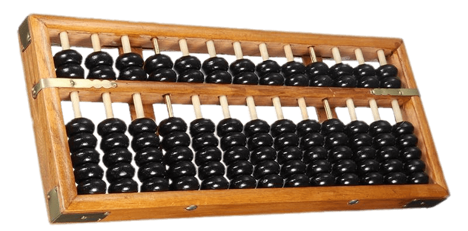

Der Abakus, auch Rechenbrett genannt, ist eines der ältesten bekannten Rechenhilfsmittel und hat eine lange Geschichte, die sich über viele Kulturen und Jahrtausende erstreckt. Ursprünglich in Mesopotamien entwickelt, fand der Abakus weite Verbreitung in China, Japan, Griechenland und Rom. Jede Kultur passte den Abakus an ihre spezifischen Bedürfnisse und mathematischen Systeme an.
Die Anfänge des Abakus lassen sich bis ins 3. Jahrtausend v. Chr. zurückverfolgen. In Mesopotamien wurden Tontafeln mit vertikalen Linien und Kugeln verwendet. In China entwickelte sich der Suanpan, ein Holzrahmen mit Stäben und Perlen, der bis ins 20. Jahrhundert weit verbreitet war. In Japan wurde der Soroban, eine vereinfachte Version des Suanpan, in Schulen und Handelsgeschäften verwendet.
Der Abakus basiert auf dem Dezimalsystem, wobei jede Spalte eine Dezimalstelle repräsentiert. Die Perlen auf jedem Stab werden bewegt, um Zahlen darzustellen. In den meisten Abakus-Varianten gibt es zwei Arten von Perlen: die oberen Perlen, die jeweils den Wert von fünf Einheiten repräsentieren, und die unteren Perlen, die jeweils den Wert von einer Einheit repräsentieren. Durch das Bewegen der Perlen können Addition, Subtraktion, Multiplikation und Division durchgeführt werden.
Der Abakus hatte eine erhebliche Bedeutung in vielen Kulturen, insbesondere in denen, in denen schriftliche Mathematik weniger verbreitet war. Er ermöglichte es Händlern, Bauern und anderen, komplexe Berechnungen durchzuführen, ohne auf formale mathematische Bildung angewiesen zu sein. In vielen Teilen der Welt wurde der Abakus auch in Schulen verwendet, um mathematische Konzepte zu lehren. In Japan wurde der Abakus als Soroban bekannt und entwickelte sich aus dem chinesischen Suanpan. Der Soroban hat weniger Perlen als der Suanpan, was die Berechnungen schneller und effizienter macht. Der Soroban wurde nicht nur in Handelsgeschäften, sondern auch in Schulen verwendet, um mathematische Fähigkeiten zu lehren. In der modernen Welt hat der Abakus zwar an Bedeutung verloren, bleibt aber ein faszinierendes Relikt der mathematischen Geschichte. Er wird noch immer in einigen Ländern verwendet, insbesondere in asiatischen Kulturen, wo er als effektives Werkzeug zur Förderung von Denkfähigkeiten und mathematischem Verständnis geschätzt wird.
Der Abakus bietet mehrere Vorteile:
1. Visuelle Darstellung: Erleichtert das Verständnis
mathematischer Konzepte.
2.
Handlungsorientiertes Lernen: Fördert aktives und interaktives Lernen.
3. Entwicklung von
Gedächtnis und
Konzentration: Verbessert kognitive Fähigkeiten.
In der modernen Bildung wird der Abakus zunehmend als Werkzeug zur Förderung von
mathematischen Fähigkeiten und
kognitiven Entwicklungen eingesetzt.
haben gezeigt, dass das Arbeiten mit dem
Abakus die mathematischen Fähigkeiten und das räumliche Denken
verbessern kann.
Der Abakus ist ein faszinierendes und vielseitiges Rechenhilfsmittel, das über Jahrtausende hinweg in verschiedenen Kulturen verwendet wurde. Seine einfache, aber effektive Konstruktion ermöglicht komplexe Berechnungen und fördert das Verständnis mathematischer Konzepte. Trotz technologischer Fortschritte bleibt der Abakus ein wertvolles Werkzeug in der modernen Bildung und in vielen Teilen der Welt.

